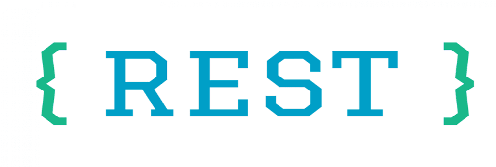
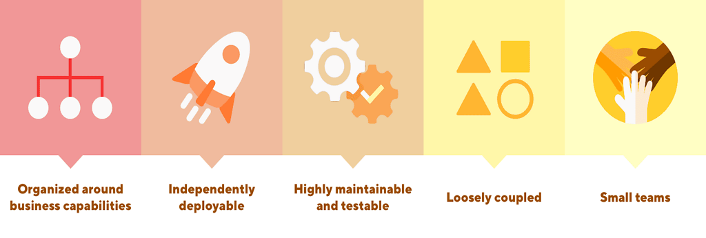

Congratulations!! you are in the right place.
I've been into Software Developement field for quite some time now, if i were to give any exact figure it would be 5 years at the time this website is created. I Did My Bachelors in Techonolgy from Dr. A.P.J. Abdul Kalam Technical Universitygraduated in year 2016. Then i moved on to work for different organization to get some hands-on on how things work in real time. What challenges do we face while developing applications and how to do we solve them, how can we scale our applications, these were the things i got to know while working for them.